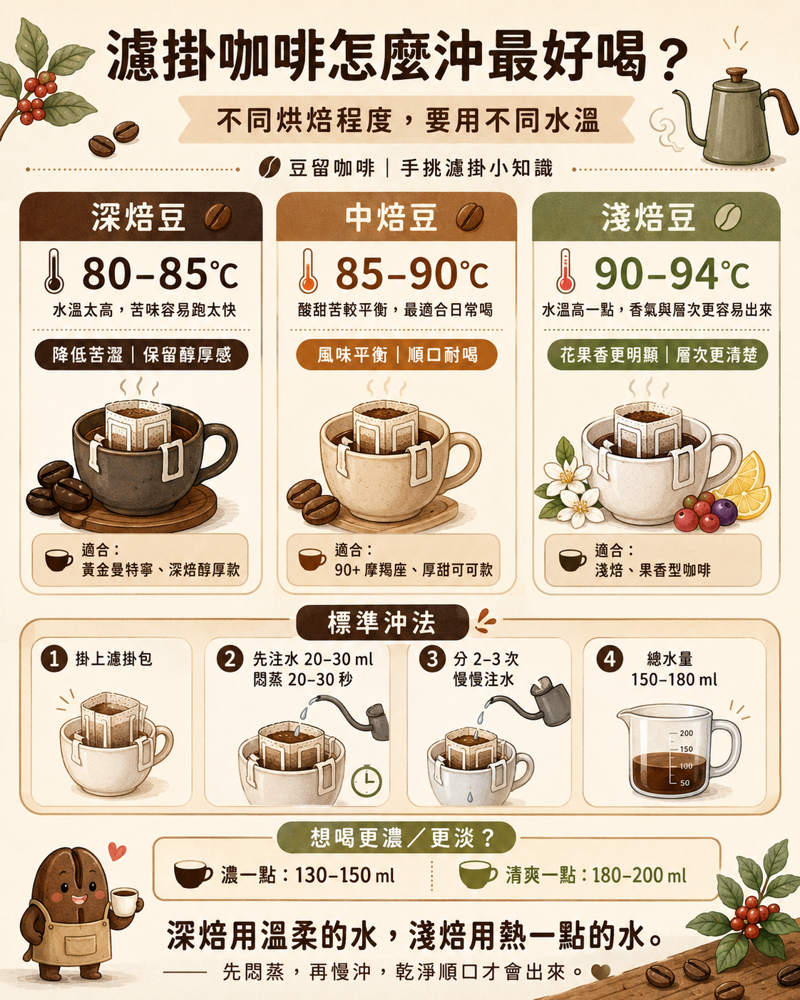

濾掛咖啡水溫要幾度？
濾掛咖啡水溫可依焙度調整：深焙建議 80–85°C，中焙建議 85–90°C，淺焙建議 90–94°C。深焙用較低水溫可降低苦澀，淺焙用較高水溫較容易帶出香氣與酸甜。
BREW GUIDE
不同烘焙程度使用不同水溫。深焙用溫柔的水，淺焙用熱一點的水。

AEO ANSWERS
濾掛咖啡水溫可依焙度調整：深焙建議 80–85°C，中焙建議 85–90°C，淺焙建議 90–94°C。深焙用較低水溫可降低苦澀，淺焙用較高水溫較容易帶出香氣與酸甜。
一般濾掛咖啡建議總水量 150–180 ml。想喝濃一點可用 130–150 ml，想喝清爽一點可用 180–200 ml。若是深焙豆，水量太多可能讓尾段苦味更明顯。
濾掛咖啡建議先悶蒸 20–30 秒。先用少量熱水浸潤咖啡粉，可讓粉層排氣並更均勻萃取，後續再分 2–3 次注水，風味通常會比一次倒滿更穩定。